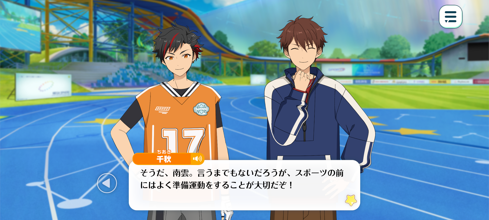
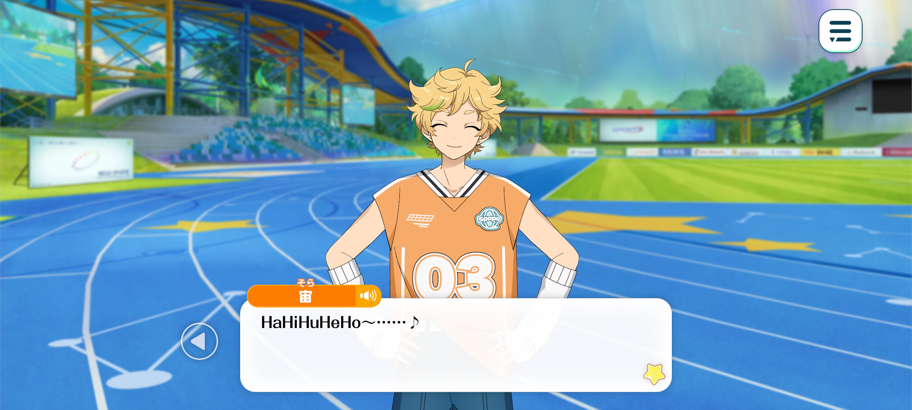
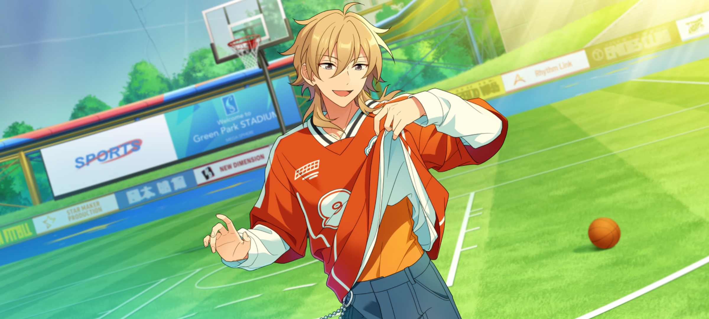
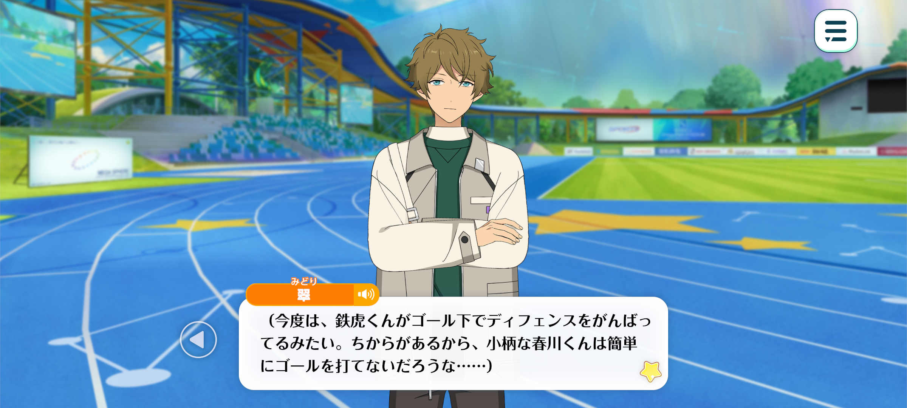

Scout! Ambassador Spopo
Passion Is The Key To Appeal – Chapter 4



Time: A few days later.
Location: At the stadium
Tetora: One, two, three, four!
Chiaki: That's the way, Nagumo! And remember, a proper warm-up is essential before doing any kind of sport!
If there's anything you're not sure how to do, just ask! I'll show you exactly how it's done, step by step!
Kaoru: Ahaha... Thanks, we really appreciate it.
You're in particularly high spirits today, aren't you, Moricchi?
Chiaki: Well, it's not every day I get a request from my adorable juniors and my classmates! Besides, it's been ages since I've had a chance to play basketball ♪.
Midori: You do realise we're not actually playing, don't you? They only asked us to give them some basketball advice and handle the filming.
Not that I particularly understand why I have to be here... I'm not exactly enthusiastic about basketball, and surely Morisawa-senpai could manage perfectly well on his own.
Tetora: Well, better safe than sorry, right? Besides, I thought Midori-kun would probably be better at handling the camera than Morisawa-senpai.
Chiaki: Ah, that's true! Takamine's much more reliable than I am when it comes to that sort of thing ♪.
Tetora: It's more that you'd get so caught up watching us play that you'd probably forget all about filming and miss every good shot.
Chiaki: Well, I can't exactly argue with that! Fuhahaha ☆
Midori: You’re way too loud…
Sora: Everyone in Ryuuseitai gets along so well~♪
Jun: Yeah. Well, Morisawa-senpai’s kinda being dunked on right now but, other than that…
Anyhow, we'd better warm up too. It would suck if anyone got injured whilst we’re playing.
Sora: Yes! Sora will help Jun-chan-senpai stretch his back~ ♪
Chiaki: That's the spirit! It's always good to warm up together...☆
Jun: Whenever you're ready, Harukawa-kun.
...Um, Harukawa-kun? Are you actually putting any weight on me? I can't feel anything...
Midori: Um... That's because he's over there.

Sora: HaHiHuHeHo~...♪
Midori: I think he's got a bit carried away and is just bouncing around to warm himself up…?
Jun: Ah…
Chiaki: With athletic ability like that, he might even be able to pull off a slam dunk!
Tetora: Ahaha, we should have had this guy join the basketball club…
Kaoru: Sora-kun, come back over here. We can warm up while we go over the rules.
Sora: Ah, Sora’s coming~!
Jun: Damn, and he’s already all the way back over here…
Kaoru: Um, Moricchi, you said we'd be playing two-on-two, taking turns trying to score, right?
Chiaki: That's right! You've probably heard of one-on-one and three-on-three, so it's the same idea, just with two players on each team.
But since the main point this time is to get some good footage, there's no need to set too many strict rules. We don't want to restrict what everyone can do!
Let's keep it simple: whichever team scores the most points before time's up wins.
If anything's unclear, or we run into any problems, we can just work it out as we go. How does that sound?
Kaoru: Sounds good to me. It's not as though we're playing for keeps, after all.
Tetora: You say that, but I still wanna win!
Jun: Yeah, I'm planning on winning, too~.
Sora: Sora doesn’t want to lose either~!
Kaoru: You're all surprisingly competitive, aren't you?
Chiaki: Fuhahaha! I love seeing everyone so fired up! ☆
Midori: Since this is work, I think it'd be best if we didn't let our personal feelings get in the way...
Anyway, have you decided on the teams yet?
Kaoru: Ah, no, not yet. Moricchi, could you split us into teams?
Chiaki: Of course! Nagumo and Sazanami are about evenly matched, so...
Hakaze and Harukawa, how about you two be the team captains?
Let's have Nagumo and Hakaze on one team, and Harukawa and Sazanami on the other!
Tetora: Works for me! Let's have a good game, Hakaze-senpai!
Kaoru: Yeah, let's~ ♪.
Sora: Sora's so happy we get to be partners again, Jun-chan-senpai~♪
Jun: Me too. It's easier when you know how your partner plays. That way, you can anticipate their movements and know how best to work together.
Chiaki: Then it's settled! Now that we're all warmed up, let's get this game started! ♪

Kaoru: Right. ...Everyone, just remember that this is supposed to be a promotional video for our innerwear.
So don't get too caught up in winning. Just focus on making sure you look good on camera.
Tetora: It'd defeat the whole purpose if the promotion itself turned out rubbish... Got it!
Jun: We should try to get as much good footage as possible, with plenty of shots that show off the innerwear, too.
Sora: Yep! Let's do our best to make a great video!
Kaoru: Right then, is everyone ready? Moricchi, could you give us the countdown?
Chiaki: Leave it to me! Ready... and... start!
Kaoru: …Hup!
Midori: Ah, Hakaze-senpai's got the ball first.
Chiaki: Whoa! He might seem laid-back, but he's really quite something, isn't he? ♪
Midori: He's making his way towards the basket...
Jun: I can’t let you get close!
Kaoru: …Hmph!
Sora: Jun-chan-senpai, over here!
Jun: Harukawa-kun, I’m counting on you…!
Chiaki: Whoa! Sazanami's stolen the ball and passed it to Harukawa! He's got some real talent on the court! ☆
Tetora: I'm not letting you score!
Sora: Tetora-chan…!

Midori: (Tetora-kun's putting up a pretty solid defence under the basket. With his strength, it'll probably be difficult for the smaller Harukawa-kun to get a shot in…)
(They're both keeping the camera in mind, too, making sure to give it some good angles.)
(Hakaze-senpai is particularly impressive. Though Harukawa-kun's unpredictable, instinctive movements are pretty eye-catching, too...)
(Yeah, they'll definitely get some usable footage out of this.)
(And luckily, it doesn't look like this'll drag on for too long...♪ Maybe I'll be able to get out of here soon after all.)
Chiaki: ...Whoa! Looks like things are really heating up!
Midori: …Huh?
Tetora: You're not getting the ball!
Jun: Oh, I'm gonna get it even if I have to prise it out of your hands...!
(W-wait, what?! When did things get so intense?!)